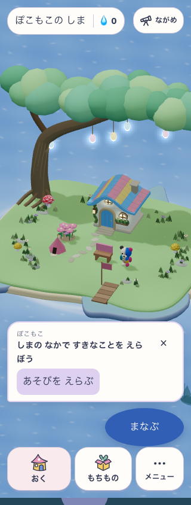
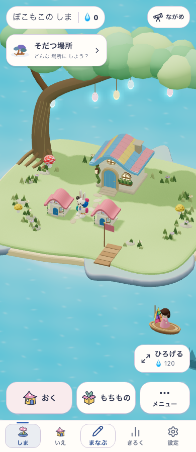
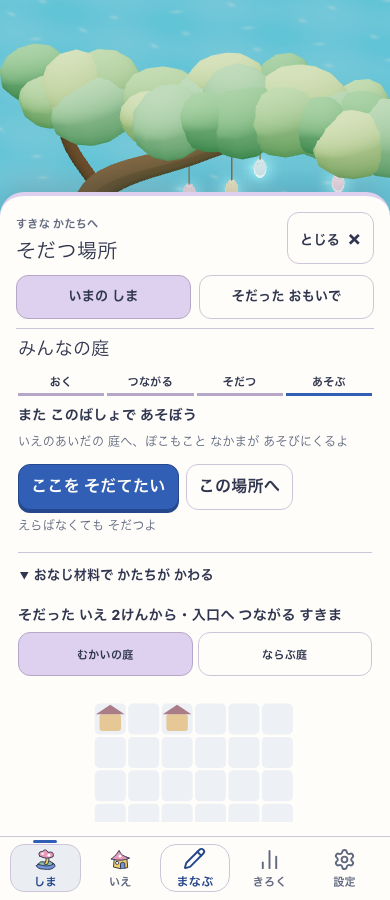
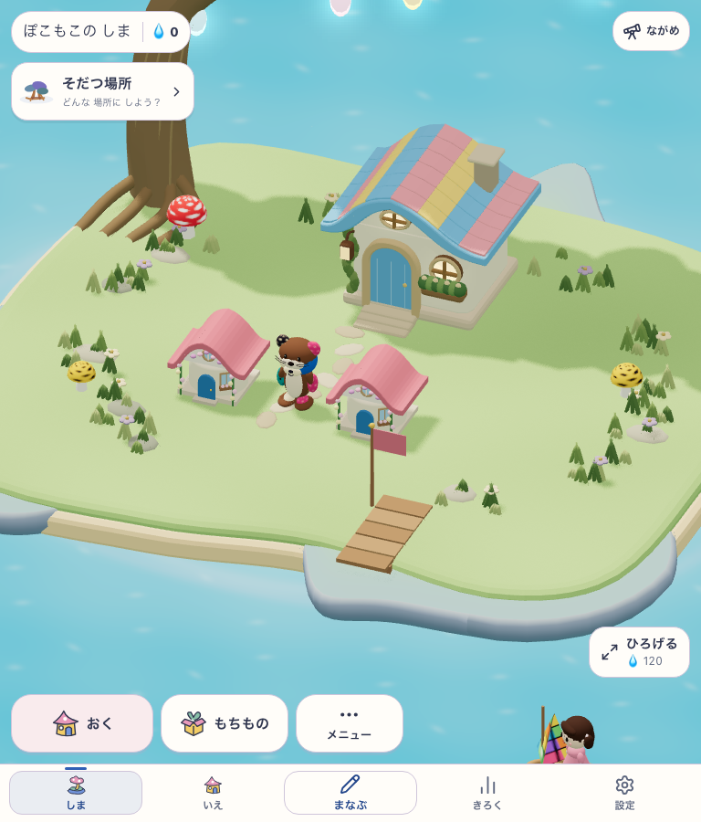
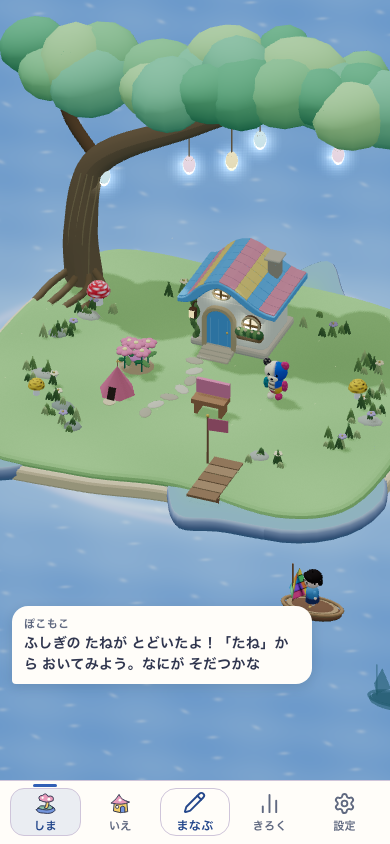
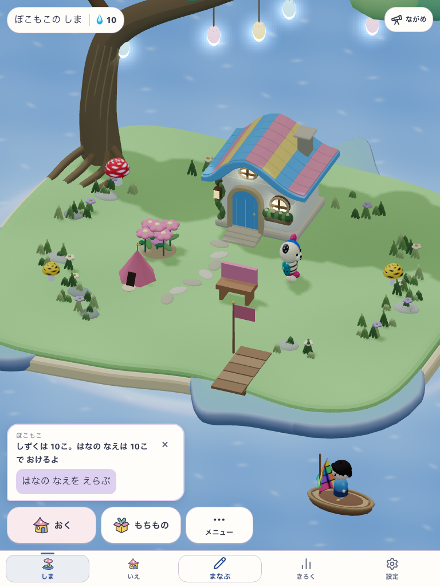

2026-10-19・local Chromium。共有庭の成熟配置と旧snapshotは明示した診断。実機・児童・美術の採用を認定しない。
app: Island / Growing、nativeOwnedArt=false
revision: cd3e0292d99ca4e08cc218cce498a3b68a5c7757-growth-v04-new
version: cd3e0292d99ca4e08cc218cce498a3b68a5c7757-growth-v04-new:3532a226-8296-41e8-9684-8d339b310e72
shell candidate: mystic-island-shore-garden-v18 / world: growing-island-v1
ROLLBACK: cd3e0292d99ca4e08cc218cce498a3b68a5c7757-growth-v04-rollback:3bc03b78-7267-41c4-be50-9a0a25725de4





